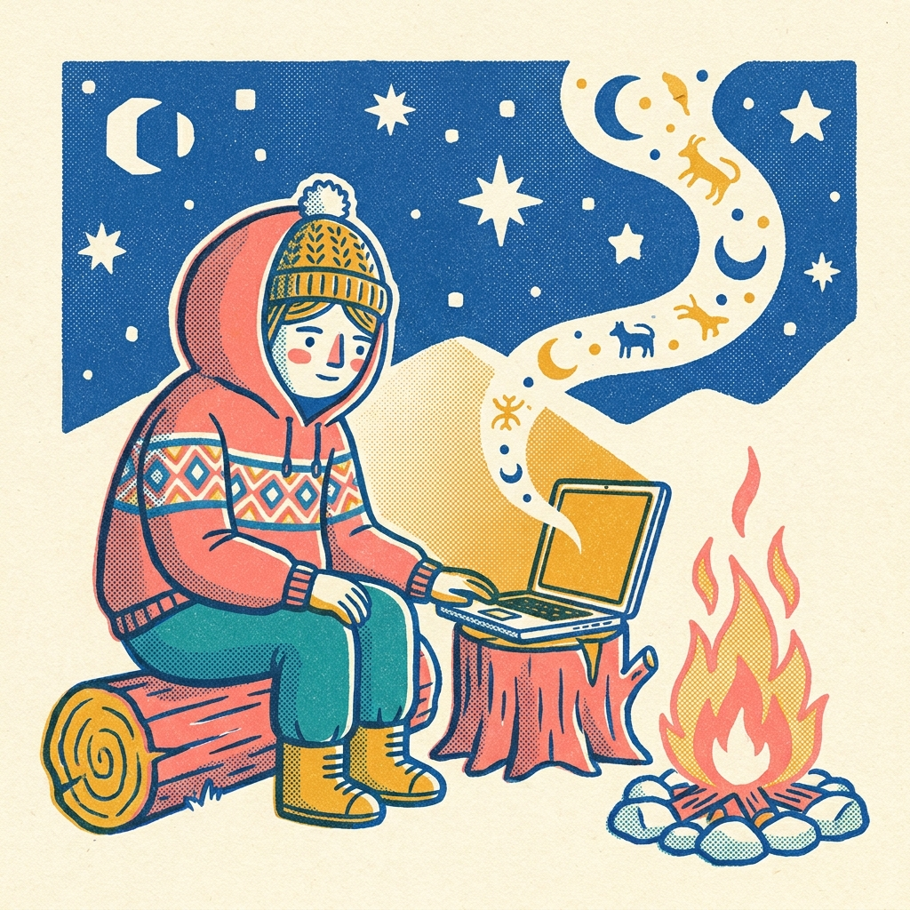
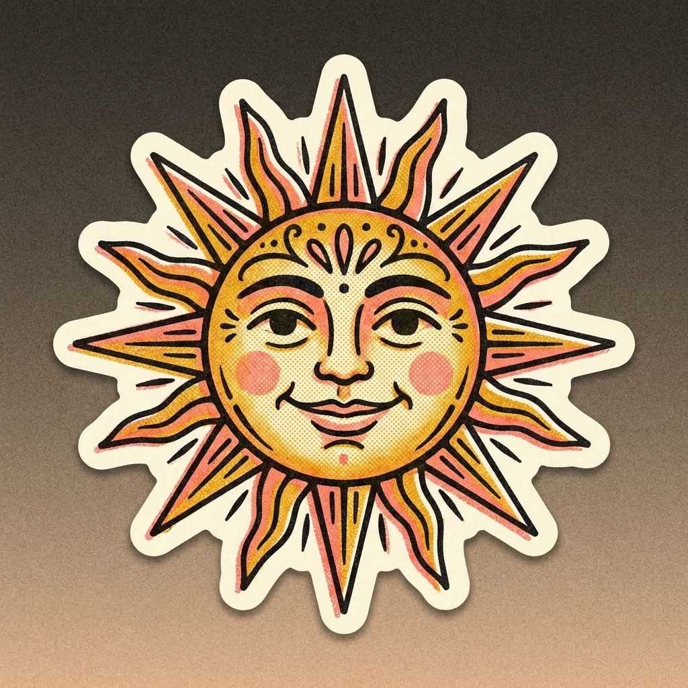
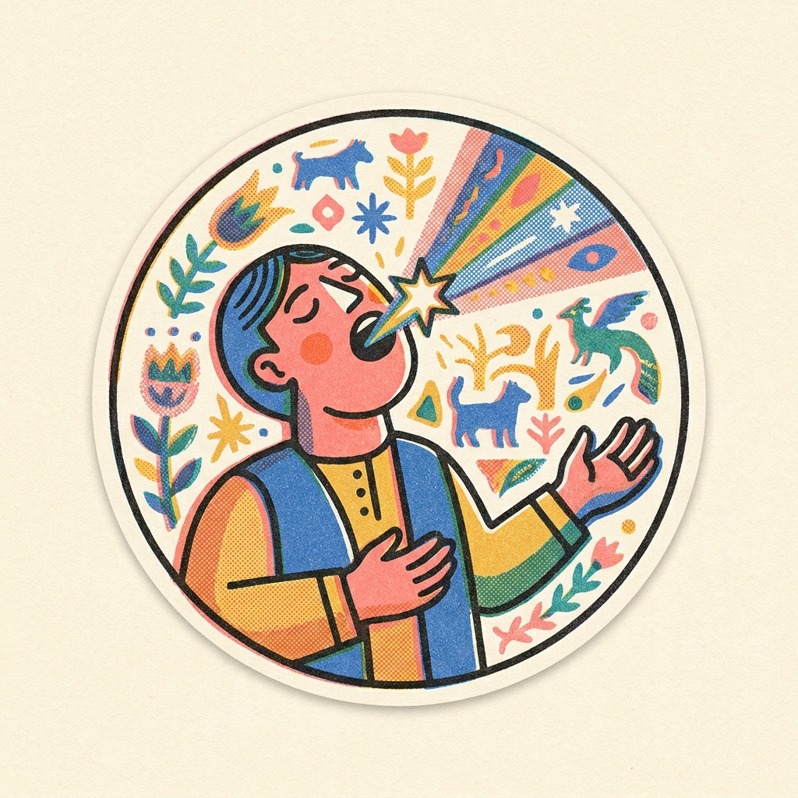
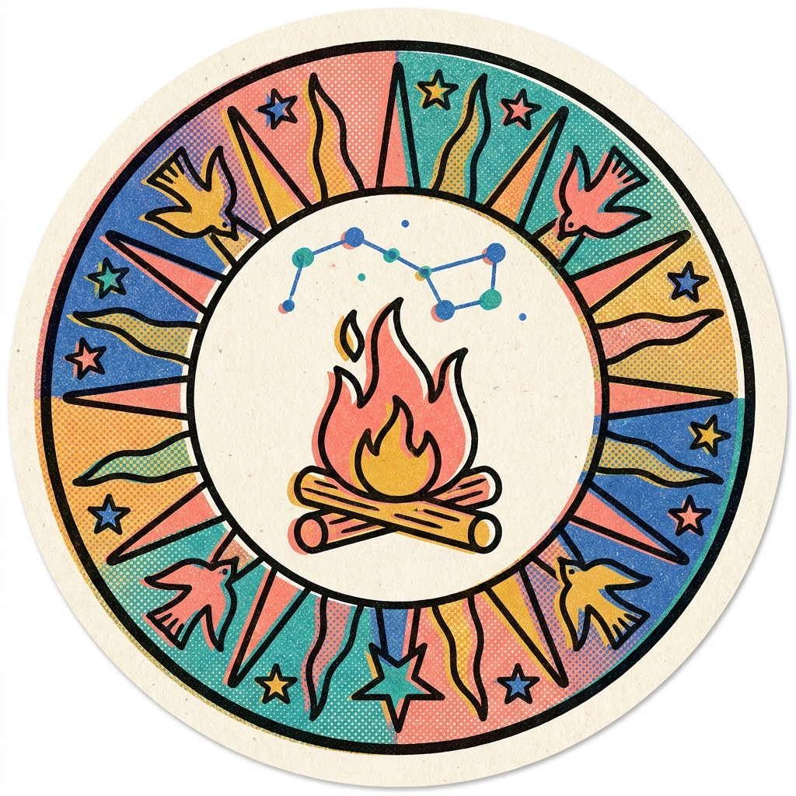

The Memes
told and retold.
Folk knowledge always spread as memes. Ours are minted by the network and posted to the timeline — drop yours; the best ones make the store.


more minting · follow @usefolklore
Folklore is that — for your agents. Never research the same thing twice.
The same paper read again. The same dead-ends walked again. The same conclusion re-derived — and re-billed — a thousand times.
You pay OpenAI, Anthropic, every endpoint, per token, to re-run inference over data someone already ground out yesterday. The work was done. Nobody kept the answer.
Folklore sits between your agent and the web. Every research call meets your own graph first. Read it Tuesday? You don't pay Thursday.

Graphs answer each other over libp2p. The first hop becomes "what does the network already know?" Every record signed by a named hand.
It works alone on day one — your own graph answers first. It compounds the moment peers join, and nobody grinds out the same answer twice.
Knowledge that survives by being passed on — story to story, peer to peer — never relearned from scratch. The lore is the graph: every finding set down so it can be told again.
Stone soup for machines — each peer drops in what they ground out, everyone eats. A shared pool of answers nobody pays for twice. Not a vendor's cloud; a hearth the folk keep together.
The peers who hold it. Every record signed by a real, named hand — no central server, no anonymous scrape. The folk are the peers, and the telling is theirs to pass on.
A hook catches every WebSearch and WebFetch before it leaves. Local tools never touched.
Hybrid recall, cross-encoder rerank, graph PPR — your pages first, then the network's.
Score 0.85 with two hits or more, served from memory. Fall short, the fetch proceeds.
Whatever the web returns is filed and signed, so the next reader pays nothing.
CPU-only. No model judging a model. Simulator figures — the hundred-peer pilot is next.
# install + onboard — daemon, hooks, identity $ npm install -g @usefolklore/folklore $ folklore onboard # set down what teaches you $ folklore save --type synthesis --label "mxbai on long ctx" \ --text "Cross-encoder wins under 512 tokens; mxbai degrades slower past 2k." # join a peer, ask the network $ folklore peer add /ip4/203.0.113.7/tcp/4001/p2p/12D3KooW... $ folklore ask "mxbai-rerank vs cross-encoder?" --peers
It pays off alone on day one — your own graph answers first — and compounds the moment a peer joins. Four moves, the real commands, nothing invented.
One global package — the daemon, CLI, and agent hook all ship together.
folklore onboard wires up the daemon, the PreToolUse deny-on-confidence hook, and your signed identity. The hook gates WebSearch and WebFetch — and never touches local Read, Grep, or Glob.
folklore ask "…" answers from your own graph first — milliseconds, zero tokens. It only falls back to the web on a miss, then files the result so the next ask is free.
folklore peer add … then folklore ask "…" --peers — the first hop becomes "what does the network already know?", every record signed by a real, named hand.
knowledge that survives by being passed on — never relearned from scratch
The mark on dark cotton. Drops to peers first.


Sticker packs, the enamel pin, folk-character prints. Memes by the network.
Folk knowledge always spread as memes. Ours are minted by the network and posted to the timeline — drop yours; the best ones make the store.
more minting · follow @usefolklore
A community memecoin for the commons. Fair-launched on bags.fm. The folk hold the lore — for the culture, not the chart.
Get $LORE on bags.fmMemecoin · for fun & culture, not financial advice · contract address at launch
